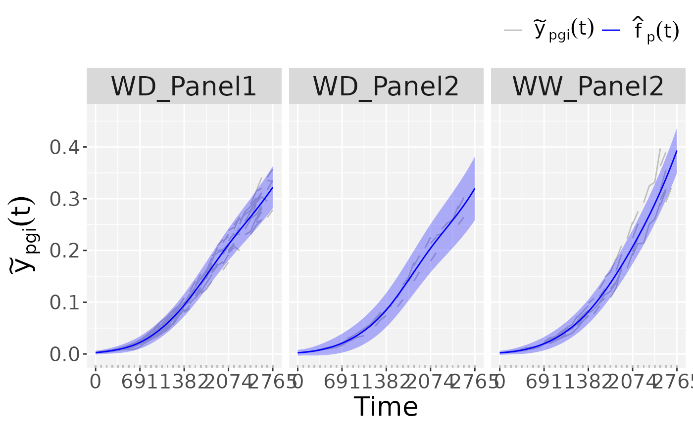
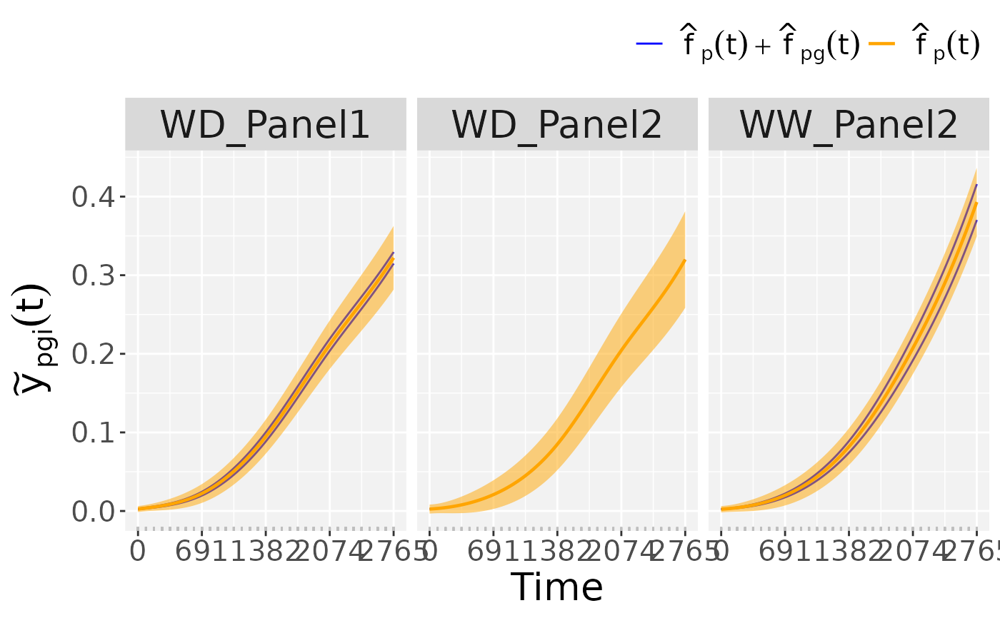
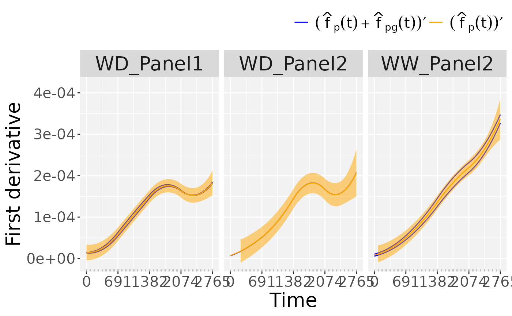
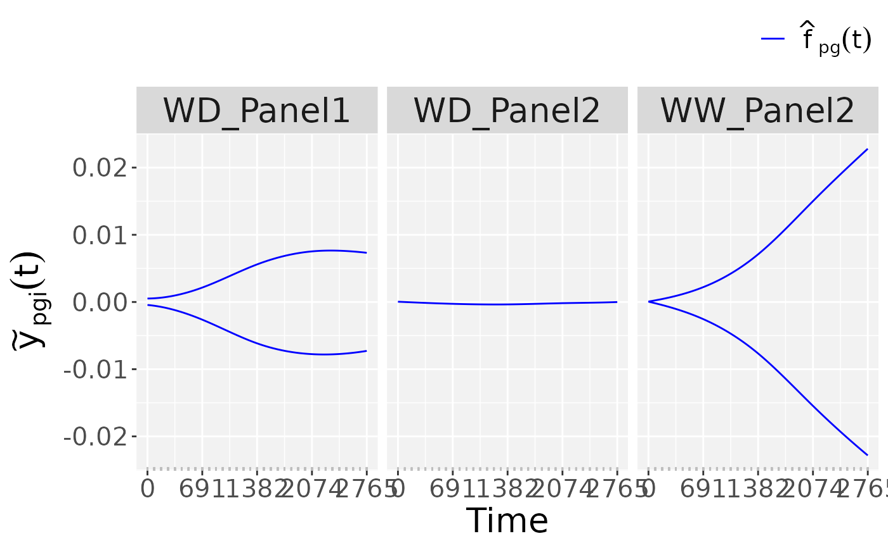
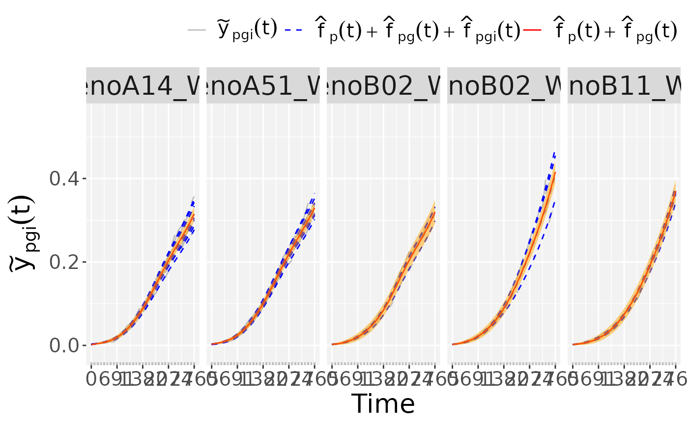

Function that predicts the P-spline Hierarchical Curve Data Model (see
fitSplineHDM) on a dense grid. It provides standard errors
for curves at each level of the hierarchy. User has to be aware that
standard errors at the plot level demand large memory. We suggest set
that option at the FALSE level
Arguments
- object
An object of class "psHDM" as obtained after fitting (
fitSplineHDM) the P-spline Hierarchical Curve Data Model- newtimes
A numeric vector with timepoints at which predictions are desired
- pred
A list that controls the hierarchical levels at which predictions are desired (population/genotypes/plots). The default is
TRUE.- se
A list that controls the hierarchical levels at which standard errors are desired (population/genotypes/plots). The default is
TRUEexcept at the plot level.- trace
An optional value that controls the function trace. The default is
TRUE.- ...
Not used.
Value
An object of class psHDM, a list with the following outputs:
predict.psHDM
newtimes A numeric vector with the timepoints at which predictions
and/or standard errors have been obtained.
popLevel A data.frame with the estimated population trajectories
and first and second order derivatives, and if required their respective
standard errors, at the newtimes.
genoLevel A data.frame with the estimated genotype-specific
deviations and trajectories and their respective first and second order
derivatives, and if required their respective standard errors,
at the newtimes.
plotLevel A data.frame with the estimated plot-specific
deviations and trajectories and their respective first and second order
derivatives, and if required their respective standard errors,
at the newtimes.
plotObs A data.frame with the raw data at the original timepoints.
References
Pérez-Valencia, D.M., Rodríguez-Álvarez, M.X., Boer, M.P. et al. A two-stage approach for the spatio-temporal analysis of high-throughput phenotyping data. Sci Rep 12, 3177 (2022). doi:10.1038/s41598-022-06935-9
See also
Other functions for fitting hierarchical curve data models:
fitSplineHDM(),
plot.psHDM()
Examples
## The data from the Phenovator platform have been corrected for spatial
## trends and outliers for single observations have been removed.
## We need to specify the genotype-by-treatment interaction.
## Treatment: water regime (WW, WD).
spatCorrectedArch[["treat"]] <- substr(spatCorrectedArch[["geno.decomp"]],
start = 1, stop = 2)
spatCorrectedArch[["genoTreat"]] <-
interaction(spatCorrectedArch[["genotype"]],
spatCorrectedArch[["treat"]], sep = "_")
## Fit P-Splines Hierarchical Curve Data Model for selection of genotypes.
fit.psHDM <- fitSplineHDM(inDat = spatCorrectedArch,
trait = "LeafArea_corr",
genotypes = c("GenoA14_WD", "GenoA51_WD",
"GenoB11_WW", "GenoB02_WD",
"GenoB02_WW"),
time = "timeNumber",
pop = "geno.decomp",
genotype = "genoTreat",
plotId = "plotId",
difVar = list(geno = FALSE, plot = FALSE),
smoothPop = list(nseg = 4, bdeg = 3, pord = 2),
smoothGeno = list(nseg = 4, bdeg = 3, pord = 2),
smoothPlot = list(nseg = 4, bdeg = 3, pord = 2),
weights = "wt",
trace = FALSE)
## Predict the P-Splines Hierarchical Curve Data Model on a dense grid
## with standard errors at the population and genotype levels
pred.psHDM <- predict(object = fit.psHDM,
newtimes = seq(min(fit.psHDM$time[["timeNumber"]]),
max(fit.psHDM$time[["timeNumber"]]),
length.out = 100),
pred = list(pop = TRUE, geno = TRUE, plot = TRUE),
se = list(pop = TRUE, geno = TRUE, plot = FALSE))
#> [1] "Population-specific growth curves OK"
#> [1] "Standard errors for population-specific growth curves OK"
#> [1] "Genotype-specific deviations OK"
#> [1] "Genotype-specific growth curves OK"
#> [1] "Standard errors for genotype-specific deviations OK"
#> [1] "Standard errors for genotype-specific growth curves OK"
#> [1] "Plot-specific deviations OK"
#> [1] "Plot-specific growth curves OK"
## Plot the P-Spline predictions at the three levels of the hierarchy
## Plots at population level.
plot(pred.psHDM,
plotType = "popTra")

## Plots at genotype level.
plot(pred.psHDM,
plotType = "popGenoTra")

## Plots of derivatives at genotype level.
plot(pred.psHDM,
plotType = "popGenoDeriv")

## Plots of deviations at genotype level.
plot(pred.psHDM,
plotType = "genoDev")

## Plots at plot level.
plot(pred.psHDM,
plotType = "genoPlotTra")
